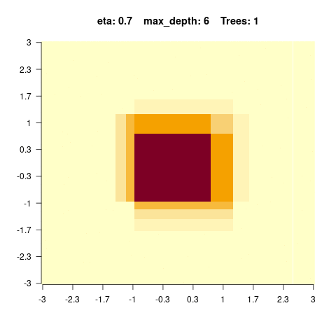

Tree-based models in general use a series of if-then rules to generate predictions from one or more decision trees. In this lecture, we will explore regression and classification trees by the example of the airquality data set. There is one important hyperparameter for regression trees: “minsplit”.
It controls the depth of tree (see the help of rpart for a description).
It controls the complexity of the tree and can thus also be seen as a regularization parameter.
We first prepare and visualize the data and afterwards fit a decision tree.
rt =rpart(Ozone~., data = data, control =rpart.control(minsplit =10))rpart.plot(rt)
Visualize the predictions:
pred =predict(rt, data)plot(data$Temp, data$Ozone)lines(data$Temp[order(data$Temp)], pred[order(data$Temp)], col ="red")
The angular form of the prediction line is typical for regression trees and is a weakness of it.
5.2 Random Forest
To overcome this weakness, a random forest uses an ensemble of regression/classification trees. Thus, the random forest is in principle nothing else than a normal regression/classification tree, but it uses the idea of the “wisdom of the crowd” : By asking many people (regression/classification trees) one can make a more informed decision (prediction/classification). When you want to buy a new phone for example you also wouldn’t go directly into the shop, but search in the internet and ask your friends and family.
There are two randomization steps with the random forest that are responsible for their success:
Bootstrap samples for each tree (we will sample observations with replacement from the data set. For the phone this is like not everyone has experience about each phone).
At each split, we will sample a subset of predictors that is then considered as potential splitting criterion (for the phone this is like that not everyone has the same decision criteria). Annotation: While building a decision tree (random forests consist of many decision trees), one splits the data at some point according to their features. For example if you have females and males, big and small people in a crowd, you con split this crowd by gender and then by size or by size and then by gender to build a decision tree.
Applying the random forest follows the same principle as for the methods before: We visualize the data (we have already done this so often for the airquality data set, thus we skip it here), fit the algorithm and then plot the outcomes.
Fit a random forest and visualize the predictions:
library(randomForest)set.seed(123)data = airquality[complete.cases(airquality),]rf =randomForest(Ozone~., data = data)pred =predict(rf, data)plot(Ozone~Temp, data = data)lines(data$Temp[order(data$Temp)], pred[order(data$Temp)], col ="red")
One advantage of random forests is that we will get an importance of variables. At each split in each tree, the improvement in the split-criterion is the importance measure attributed to the splitting variable, and is accumulated over all the trees in the forest separately for each variable. Thus the variable importance shows us how important a variable is averaged over all trees.
There are several important hyperparameters in a random forest that we can tune to get better results:
Hyperparameter
Explanation
mtry
Subset of features randomly selected in each node (from which the algorithm can select the feature that will be used to split the data).
minimum node size
Minimal number of observations allowed in a node (before the branching is canceled)
max depth
Maximum number of tree depth
5.3 Boosted Regression Trees
Random forests fit hundreds of trees independent of each other. Here, the idea of a boosted regression tree comes in. Maybe we could learn from the errors the previous weak learners made and thus enhance the performance of the algorithm.
A boosted regression tree (BRT) starts with a simple regression tree (weak learner) and then sequentially fits additional trees to improve the results. There are two different strategies to do so:
AdaBoost: Wrong classified observations (by the previous tree) will get a higher weight and therefore the next trees will focus on difficult/missclassified observations.
Gradient boosting (state of the art): Each sequential model will be fit on the residual errors of the previous model (strongly simplified, the actual algorithm is very complex).
We can fit a boosted regression tree using xgboost, but before we have to transform the data into a xgb.Dmatrix (which is a xgboost specific data type, the package sadly doesn’t support R matrices or data.frames).
The parameter “nrounds” controls how many sequential trees we fit, in our example this was 16. When we predict on new data, we can limit the number of trees used to prevent overfitting (remember: each new tree tries to improve the predictions of the previous trees).
Let us visualize the predictions for different numbers of trees:
oldpar =par(mfrow =c(2, 2))for(i in1:4){ pred =predict(brt, newdata = data_xg, ntreelimit = i)plot(data$Temp, data$Ozone, main = i)lines(data$Temp[order(data$Temp)], pred[order(data$Temp)], col ="red")}
[20:04:11] WARNING: src/c_api/c_api.cc:935: `ntree_limit` is deprecated, use `iteration_range` instead.
[20:04:11] WARNING: src/c_api/c_api.cc:935: `ntree_limit` is deprecated, use `iteration_range` instead.
[20:04:11] WARNING: src/c_api/c_api.cc:935: `ntree_limit` is deprecated, use `iteration_range` instead.
[20:04:11] WARNING: src/c_api/c_api.cc:935: `ntree_limit` is deprecated, use `iteration_range` instead.
par(oldpar)
There are also other ways to control for complexity of the boosted regression tree algorithm:
max_depth: Maximum depth of each tree.
shrinkage (each tree will get a weight and the weight will decrease with the number of trees).
When having specified the final model, we can obtain the importance of the variables like for random forests:
xgboost::xgb.importance(model = brt)
Feature Gain Cover Frequency
1: Temp 0.570072012 0.2958229 0.24836601
2: Wind 0.348230653 0.3419576 0.24183007
3: Solar.R 0.058795502 0.1571072 0.30718954
4: Day 0.019529985 0.1779925 0.16993464
5: Month 0.003371847 0.0271197 0.03267974
One important strength of xgboost is that we can directly do a cross-validation (which is independent of the boosted regression tree itself!) and specify its properties with the parameter “n-fold”:
Annotation: The original data set is randomly partitioned into \(n\) equal sized subsamples. Each time, the model is trained on \(n - 1\) subsets (training set) and tested on the left out set (test set) to judge the performance.
If we do three-folded cross-validation, we actually fit three different boosted regression tree models (xgboost models) on \(\approx 67\%\) of the data points. Afterwards, we judge the performance on the respective holdout. This now tells us how well the model performed.
Important hyperparameters:
Hyperparameter
Explanation
eta
learning rate (weighting of the sequential trees)
max depth
maximal depth in the trees (small = low complexity, large = high complexity)
subsample
subsample ratio of the data (bootstrap ratio)
lambda
regularization strength of the individual trees
max tree
maximal number of trees in the ensemble
5.4 Exercises
Question: Regression Trees
We will use the following code snippet to understand the effect of mincut and thus the predictive performance.
Try different mincut parameters and see what happens. (Compare the root mean squared error for different mincut parameters and explain what you see. Compare predictions for different mincut parameters and explain what happens.) What was wrong in the snippet above?
Approximately at mincut = 15, prediction is the best (mind overfitting). After mincut = 56, the prediction has no information at all and the RMSE stays constant.
Mind the complete cases of the airquality data set, that was the error.
Question: Random forest
We will use the following code snippet to explore a random forest:
library(randomForest)set.seed(123)data = airquality[complete.cases(airquality),]rf =randomForest(Ozone~., data = data)pred =predict(rf, data)importance(rf)
We see that for high values of max_depth, the predictions “smooth out” faster. On the other hand, with a low max_depth (low complexity of the individual trees), more trees are required in the ensemble to achieve a smooth prediction surface.
?xgboost::xgboost
Just some examples:

Question: Hyperparameter tuning of random forest
Combing back to the titanic dataset from the morning, we want to optimize min node size in our RF using a simple CV.
Prepare the data:
library(EcoData)library(dplyr)
Attaching package: 'dplyr'
The following object is masked from 'package:xgboost':
slice
The following object is masked from 'package:randomForest':
combine
The following objects are masked from 'package:stats':
filter, lag
The following objects are masked from 'package:base':
intersect, setdiff, setequal, union
library(missRanger)data(titanic_ml)data = titanic_mldata = data %>%select(survived, sex, age, fare, pclass)data[,-1] =missRanger(data[,-1], verbose =0)data_sub = data %>%mutate(age = scales::rescale(age, c(0, 1)),fare = scales::rescale(fare, c(0, 1))) %>%mutate(sex =as.integer(sex) - 1L,pclass =as.integer(pclass - 1L))data_new = data_sub[is.na(data_sub$survived),] # for which we want to make predictions at the enddata_obs = data_sub[!is.na(data_sub$survived),] # data with known response
Hints:
adjust the ‘type’ argument in the predict(…) method (the default is to predict classes)
when predicting probabilities, the randomForest will return a matrix, a column for each class, we are interested in the probability of surviving (so the second column)
prediction_ensemble =sapply(1:nrow(results), function(i) { model =randomForest(as.factor(survived)~., data = data_obs, nodesize = results$minnodesize[i] )return(predict(model, data_obs, type ="prob")[,2]) })# Single predictions from the ensemble model:write.csv(data.frame(y =apply(prediction_ensemble, 1, mean)), file ="Max_titanic_ensemble.csv")
Question: Hyperparameter tuning of boosted regression trees
Combing back to the titanic dataset from the morning, we want to optimize max depth and the eta parameter in xgboost.
Prepare the data:
library(EcoData)library(dplyr)library(missRanger)data(titanic_ml)data = titanic_mldata = data %>%select(survived, sex, age, fare, pclass)data[,-1] =missRanger(data[,-1], verbose =0)data_sub = data %>%mutate(age = scales::rescale(age, c(0, 1)),fare = scales::rescale(fare, c(0, 1))) %>%mutate(sex =as.integer(sex) - 1L,pclass =as.integer(pclass - 1L))data_new = data_sub[is.na(data_sub$survived),] # for which we want to make predictions at the enddata_obs = data_sub[!is.na(data_sub$survived),] # data with known response
Code template
library(xgboost)set.seed(42)data_obs = data_sub[!is.na(data_sub$survived),] cv =3outer_split =as.integer(cut(1:nrow(data_obs), breaks = cv))# sample minnodesize values (must be integers)hyper_depth = ...hyper_eta = ...results =data.frame(set =rep(NA, cv),depth =rep(NA, cv),eta =rep(NA, cv),AUC =rep(NA, cv))for(i in1:cv) { train_outer = data_obs[outer_split != i, ] test_outer = data_obs[outer_split == i, ] tuning_results =sapply(1:length(hyper_depth), function(k) {# Cast data to xgboost data types data_xg =xgb.DMatrix(data =as.matrix(train_outer[,-1]), label = train_outer$survived) model =xgboost(data_xg, nrounds = 16L, eta = hyper_eta[k], max_depth = hyper_depth[k]) predictions =predict(model, newdata =as.matrix(test_outer)[,-1])return(Metrics::auc(test_outer$survived, predictions))) }) results[i, 1] = i results[i, 2] = hyper_depth[which.max(tuning_results)] results[i, 3] = hyper_eta[which.max(tuning_results)] results[i, 4] =max(tuning_results)}print(results)